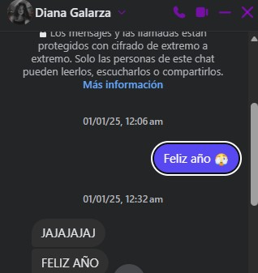
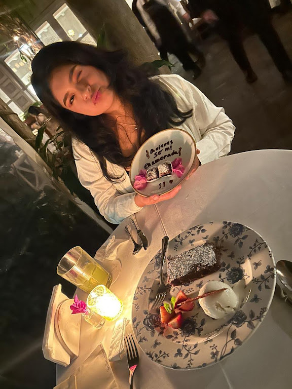
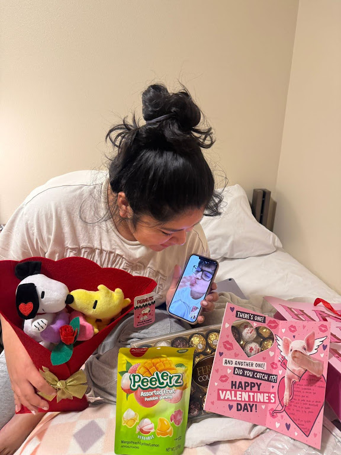
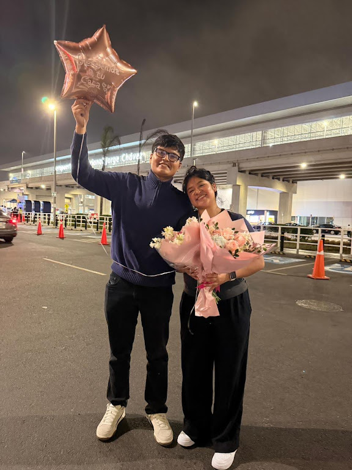
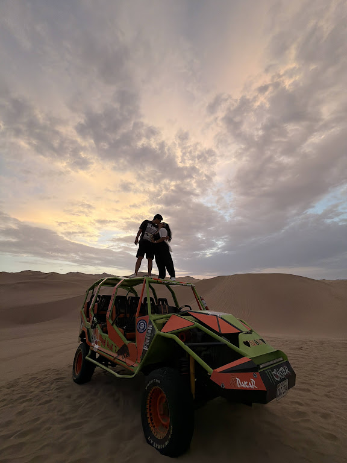
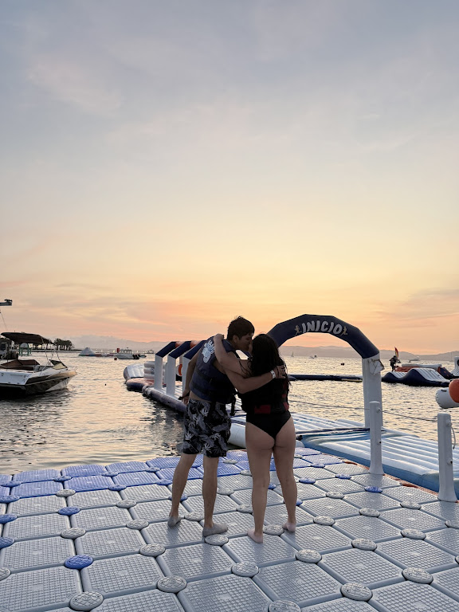

El mensaje que lo cambió todo
Todo comenzó un 1 de enero a las 00:06. Un simple «Feliz Año 🫣».
No imaginaba que aquel mensaje terminaría convirtiéndose en el inicio de la historia más bonita de mi vida. Poco a poco llegaron las conversaciones, las llamadas, las risas y las ganas de seguir conociéndote.
Aún estábamos lejos, pero algo muy especial comenzaba a construirse.

1 de enero
Conocernos de verdad
Después de tantos mensajes llegó el momento de compartir tiempo juntos. Salir, conversar, reír, acompañarnos y descubrir quiénes éramos fuera de una pantalla.
Cada salida revelaba algo nuevo. Tu forma de reírte. Lo que te apasiona. Cómo ves el mundo. La manera en que me escuchas cuando hablo. Esos pequeños detalles que uno no puede fingir.
Sin darnos cuenta, las horas se volvían minutos cuando estábamos juntos. Y cada despedida se hacía más difícil.
Fue ahí cuando entendí que no solo me gustabas.
Me estabas enamorando.
20 de julio de 2025
Ese día comenzó oficialmente nuestra historia.
Una historia que cambiaría mi vida para siempre.

Museo Larco
Aprender a construir
Y poco a poco comenzamos a imaginarnos un futuro juntos.
La despedida más difícil
Luego llegó el momento que ninguno quería. Volviste a Estados Unidos. Y esta vez fue diferente.
Cuando comenzamos a hablar por primera vez tú ya estabas allá, por eso la distancia era lo único que conocíamos. Pero ahora no.
Ahora ya sabía cómo era abrazarte. Cómo era tomarte de la mano. Cómo era verte sonreír frente a mí.
Y cuando te fuiste sentí que algo se llevaba una parte de mi corazón. Porque ahora sí sabía exactamente cuánto te extrañaría.
Elegirnos a kilómetros
Vivimos una Navidad separados. Vivimos un Año Nuevo separados. Vivimos fechas importantes sin poder abrazarnos.
Y aun así nunca dejamos de estar presentes. Siempre encontrábamos la manera.
Tú con tus detalles. Yo con mis sorpresas.
El amor siempre encontraba el camino.
14 de febrero
La distancia no fue un impedimento. Mientras tú estabas en Estados Unidos y yo en Perú, organizamos una sorpresa.
Porque amarte nunca dependió de la cantidad de kilómetros que nos separaban.

Amor a distancia
Mi cumpleaños
Estabas al otro lado del mundo. Y aun así lograste que fuera uno de los cumpleaños más especiales que he tenido.
Lo organizaste todo desde la distancia. Lo planeaste. Lo pensaste. Me demostraste que el amor verdadero no necesita estar presente para hacerse sentir.
Cuando llegaron esos regalos no pude evitar sonreír como un idiota. No por los regalos en sí, sino por todo lo que significaba que tú los hubieras elegido para mí.
Siempre supe que me querías.
Ese día lo sentí con todo.
La cuenta regresiva
Llegó el momento que ninguno quería enfrentar. Pero lo enfrentamos juntos. Cada día que pasaba era un día menos para volver a vernos.
El aeropuerto
Flores en las manos. Nervios en el pecho. Y muchas ganas de verte.
Cuando apareciste entendí que toda la espera había valido la pena. Volví a abrazarte. Volví a besarte. Volví a tenerte cerca.
Y sentí exactamente lo mismo que la primera vez.
Solo que mucho más fuerte.

Flores en las manos
Ica
Nuestro primer gran viaje juntos.
Horas de carretera con música, bromas ,vivir todo eso que tanto queriamos
Viajar contigo me mostró una versión de ti que no conocía. Más libre. Más tuya. Y me enamoré todavía más.
Así quiero que sean todos nuestros viajes.
Juntos, sin apuro, disfrutando cada momento.

Ica · 2025

Ica · 2025
Hoy
Y si algo aprendí durante todo este tiempo es que no importa dónde estés. No importa cuántos kilómetros nos separen. No importa cuánto tengamos que esperar.
Siempre voy a elegirte.
«Que eres el amor de mi vida.»